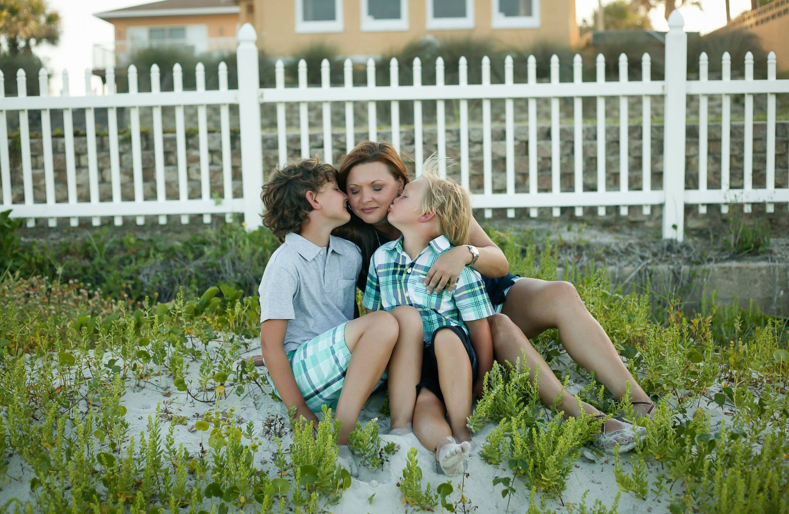

Ah the "About Me" section, the part where you are suppose to brag on yourself, which for most people, especially moms, that is really hard to do. We tend to always turn it back around to bragging on our kids. When it comes to my photography I do have to give it all to my kids though. I have 2 handsome, rambunctious little boys, Gavin and Carter, that are my sunshine when it is raining. When I had Gavin, I picked up a camera and never turned back. At first it was about capturing the love I had for him, and then I slowly realized the love I had for the camera. You see, it was about memories, ones that I knew one day could fade away and just like every other mother I wanted to keep him little forever. The only way I knew for sure I could remember every drooling smile, every messy meal, those chubby cheeks, and those 10 perfect toes was to capture it through the camera. I realized that through photography I could hold on to those little memories forever. I would love to be given the opportunity to help you capture those precious memories. Please browse my page, get to know my work. If you would like to set up a session, I would love to work with you!